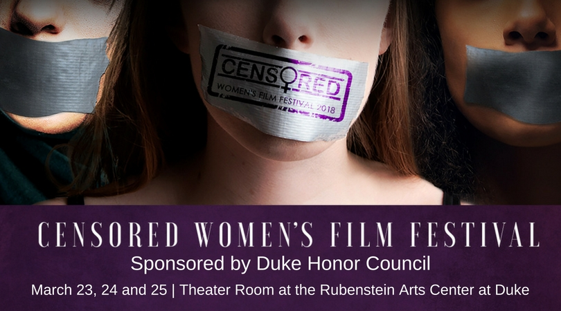

The Censored Women’s Film Festival is an annual, not-for-profit, traveling film festival and summit organized to raise consciousness and women’s rights issues through film and dialogue. Issues of women’s rights and gender equality are too often silenced and kept from mainstream cinema and discourse. The Censored Women’s Film Festival provides a space for filmmakers, activists, practitioners and students to use films as a lens through which to discuss the fight for women’s rights all over the world. Priority is given to films with a special emphasis on topics that have been censored or stifled, particularly as they relate to cultural and/or religious taboos. The Censored Women’s Film Festival seeks to amplify the stories that most need telling.